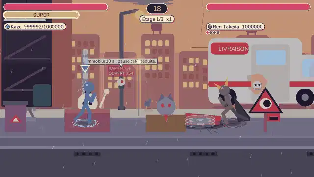
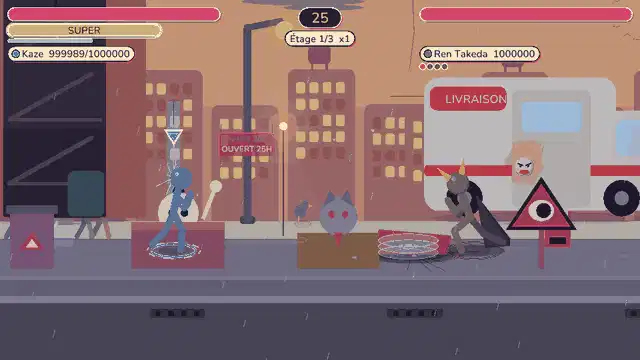
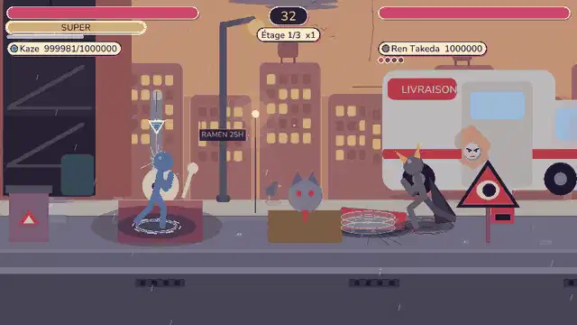
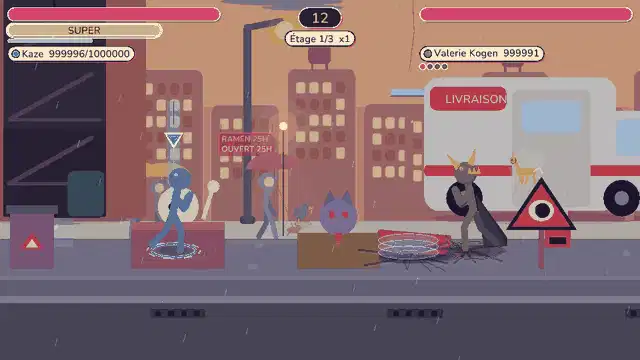
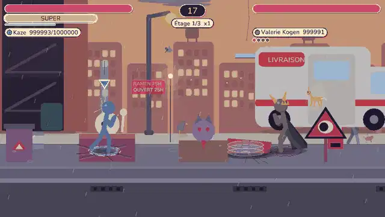
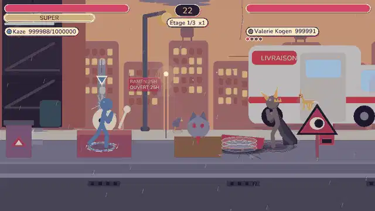
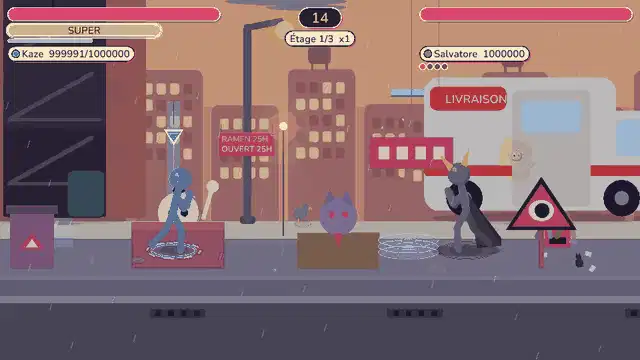
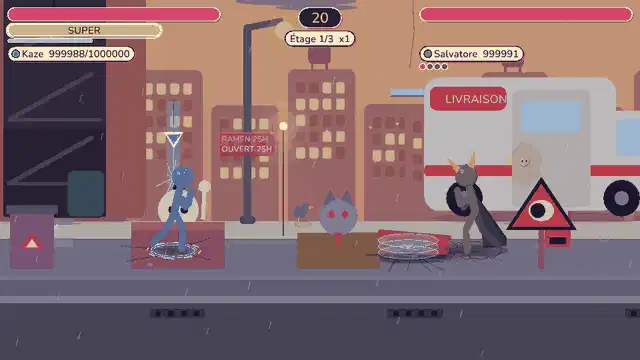

Hannya : masque et flamme de jalousie

Flamme de jalousie
Couloir marqué à la profondeur du héros ; une flamme part du masque. Dégâts 4. On saute ou on roule.

Pilier de rancune
Zone ronde verrouillée sur l'endroit où se tenait le héros ; un pilier de feu jaillit. Dégâts 5, brûlure, projection. On se déplace.

Ronde de chagrin
Anneau autour du boss : punit celui qui reste collé. Dégâts 3,5, brûlure.
Kirin : foudre et sabots

Foudre sacrée
Zone verrouillée ; la foudre tombe du ciel dessus. Dégâts 4,5.

Charge de sabots
Couloir marqué ; une onde de sabots court au sol. Dégâts 5. On saute par-dessus.

Piétinement
Anneau autour du boss. Dégâts 4. Le soin du Kirin (50 à 70 % des PV) est conservé.
Bakeneko : griffes et illusions de chat

Griffes de chat
Zone large verrouillée ; trois griffes la balaient. Dégâts 4.

Chats fantômes
Trois chats spectraux en file sur le couloir marqué, espacés : on les franchit un par un. Dégâts 2,5 chacun.
GIF non fourni la scène de capture a un héros sans arme : le coup retombe sur les chats fantômes. Vol testé par le code seulement.
Vol de patte
Si le héros porte une arme et se trouve à moins de 450, le chat la lui vole (sinon : chats fantômes). Aucun dégât.
Réglages et garde-fous
| Daemon | Cadence | Annonce | Mesure (PV perdus en 2600 images, héros immobile) |
|---|---|---|---|
| Hannya (Ren Takeda) | 420 images (avant : 600) | 30 images | 0,0 avant, 25,5 après |
| Kirin (Valérie Kogen) | 300 images (avant : 240) | 30 images | soin seul avant, 14,0 après |
| Bakeneko (Salvatore) | 360 images (inchangé) | 30 images | vol seul avant, 18,0 après |
Tests : boss_daemon_atk (mesure, annonce de 20 images au moins, jetons d'attaque, plafond de coups subis, empreinte, déterminisme) et enemy_audit::every_boss_daemon_acts_against_the_hero (aucun des 13 daemons de boss sans attaque).